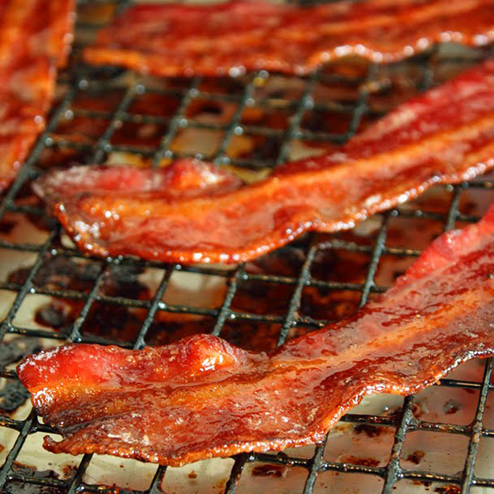

Candied Bacon
Candied bacon makes a great crunchy, smoky, and sweet party snack.
- ¼ cup packed brown sugar
- 2 tablespoons rice vinegar
- 2 tablespoons maple syrup
- ground black pepper to taste
- 1 pound thick-cut bacon
- Preheat the oven to 350 degrees F (175 degrees C).
- Mix brown sugar, rice vinegar, maple syrup, and black pepper in a small bowl.
- Place bacon slices on a cooling rack set over a baking sheet.
- Bake in the preheated oven for 10 minutes, turn slices, and bake another 5 minutes.
- Remove bacon and brush both sides with brown sugar mixture. Return bacon to the oven and bake another 5 minutes. Repeat basting every 5 minutes until bacon is browned and crisp, about 35 minutes.